Hobbies
Reading
One of my biggest pastimes is reading. I’ve developed this interest since I was very young, and over the years,
I’ve only become more and more attracted to books.
Here are some of the books that I recommend:
| Book/Series | Title | Author | Description |
|---|---|---|---|
| The Clifton Chronicles | Jeffrey Archer | The Clifton Chronicles is Jeffrey Archer's no. 1 bestselling series. Following protagonist Harry Clifton, the series brings to life the key historical and political events of the 20th century over the course of one family's story; their triumphs and their tragedies. ——— Pan Macmillan | |
| 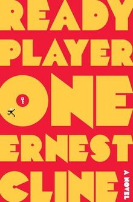 | Ready Player One | Ernest Cline | Ready Player One is a 2011 science fiction novel, and the debut novel of American author Ernest Cline. The story, set in a dystopia in 2045, follows protagonist Wade Watts on his search for an Easter egg in a worldwide virtual reality game, the discovery of which would lead him to inherit the game creator's fortune. ——— Wikipedia |
| 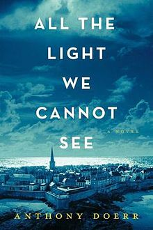 | All the Light We Cannot See | Anthony Doerr | Marie-Laure lives in Paris near the Museum of Natural History, where her father works. When she is twelve, the Nazis occupy Paris and father and daughter flee to the walled citadel of Saint-Malo, where Marie-Laure’s reclusive great uncle lives in a tall house by the sea. With them they carry what might be the museum’s most valuable and dangerous jewel... ——— Goodreads |
Baking
I’m a food lover, and during the quarantine, I found myself unable to buy whatever I wanted to eat. As a result, I started to make them at home. Turns out, I really loved baking, so I’m still doing it even though many stores and restaurants are open now. I usually do the baking with my mom, which is quite an enjoyable experience even if the food doesn’t turn out the way it’s supposed to.
Enjoy some of the stuff I’ve made in the past!
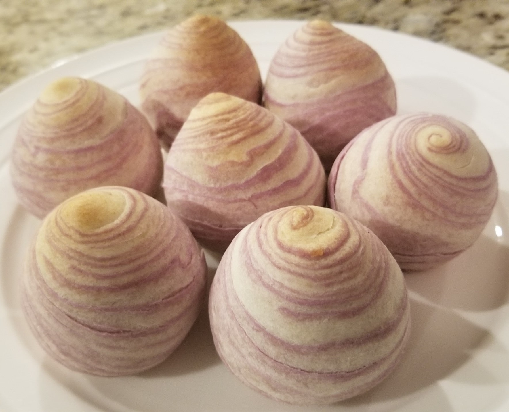
Spiral Taro Pastry
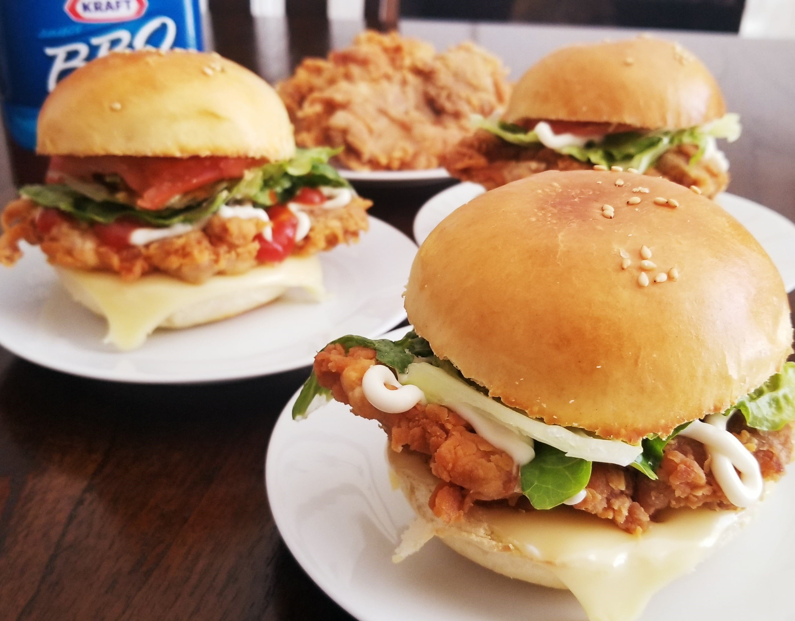
Chicken Burger
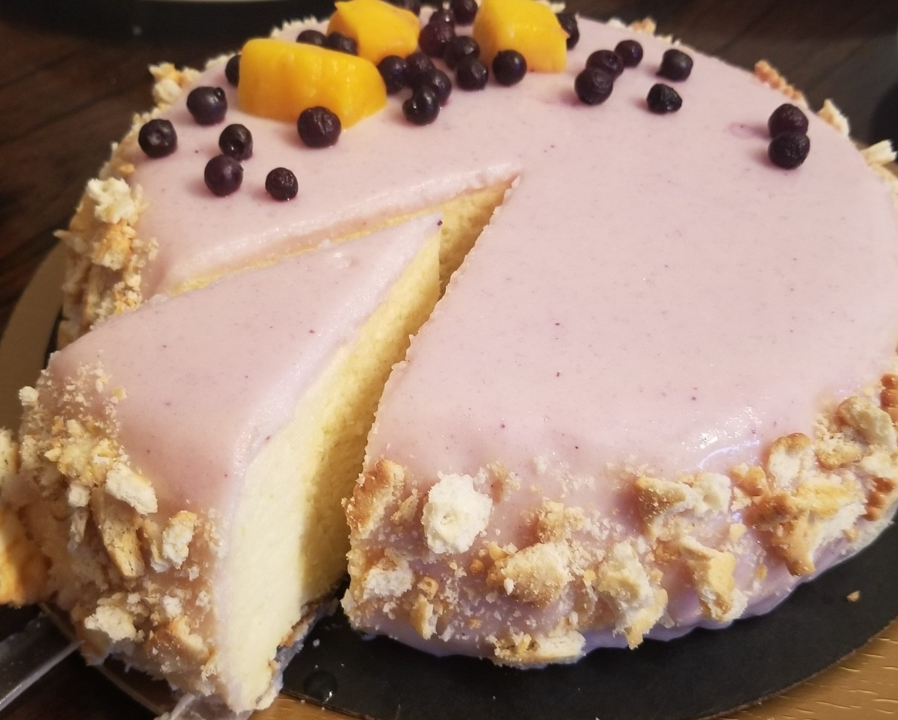
Japanese Cheesecake
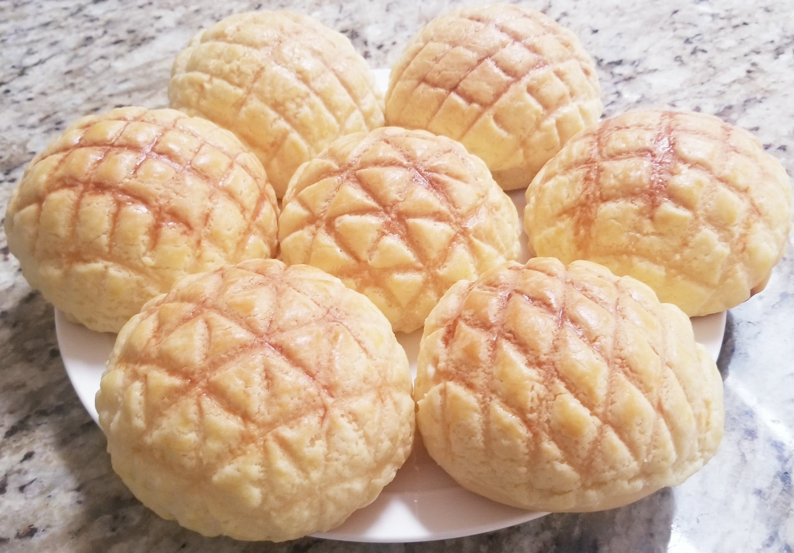
Pineapple Bun
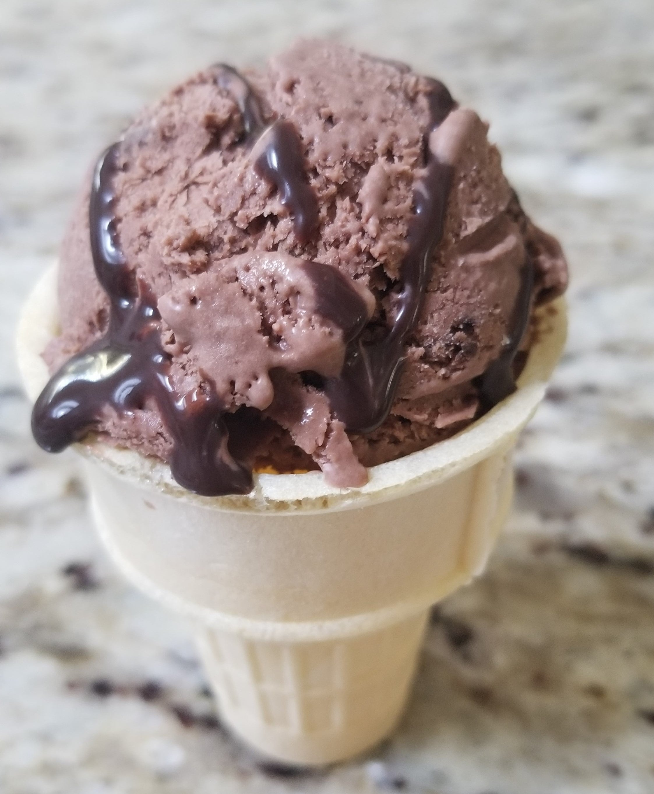
Chocolate Ice Cream
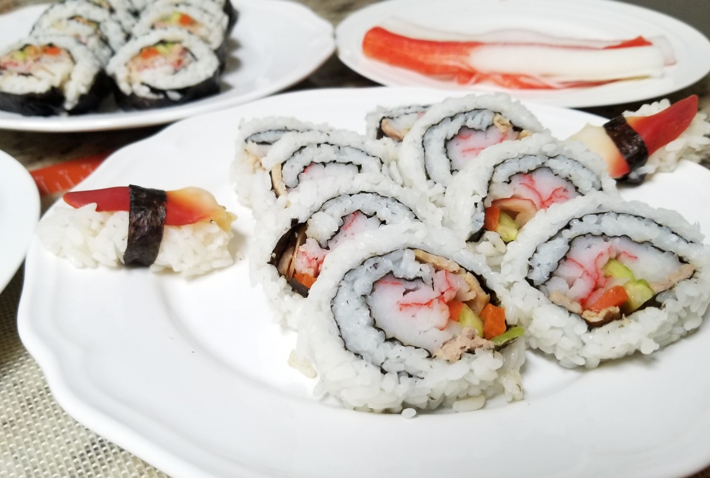
Sushi
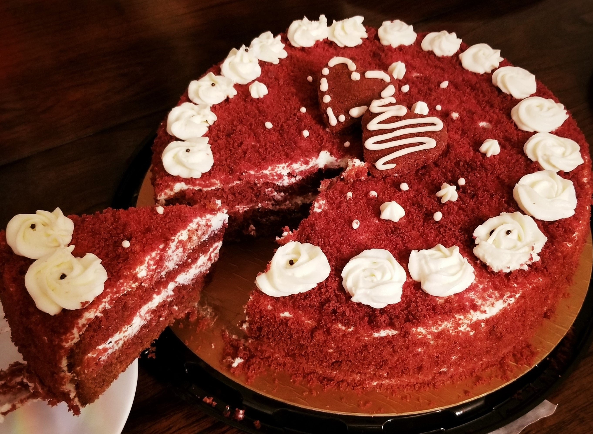
Red Velvet Cake
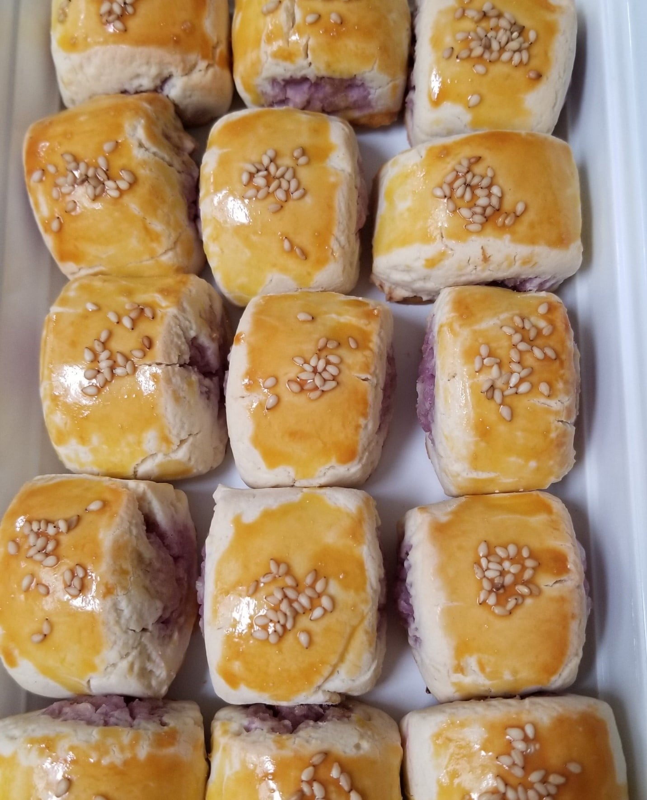
Taro Biscuit
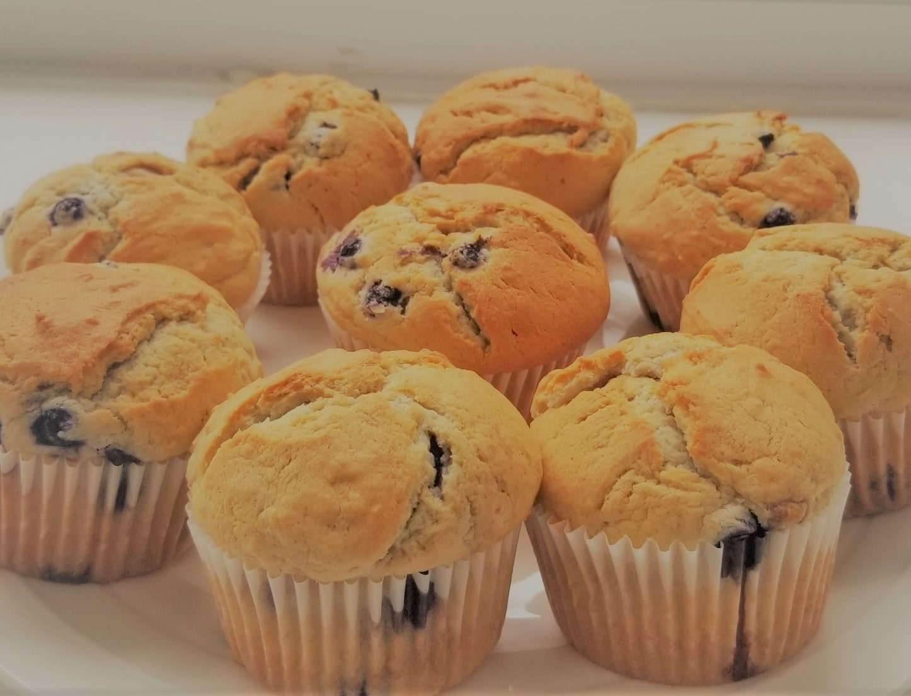
Blueberry Muffin
In case you missed it, here's how you can go back to the top!
 Back to Top
Back to Top